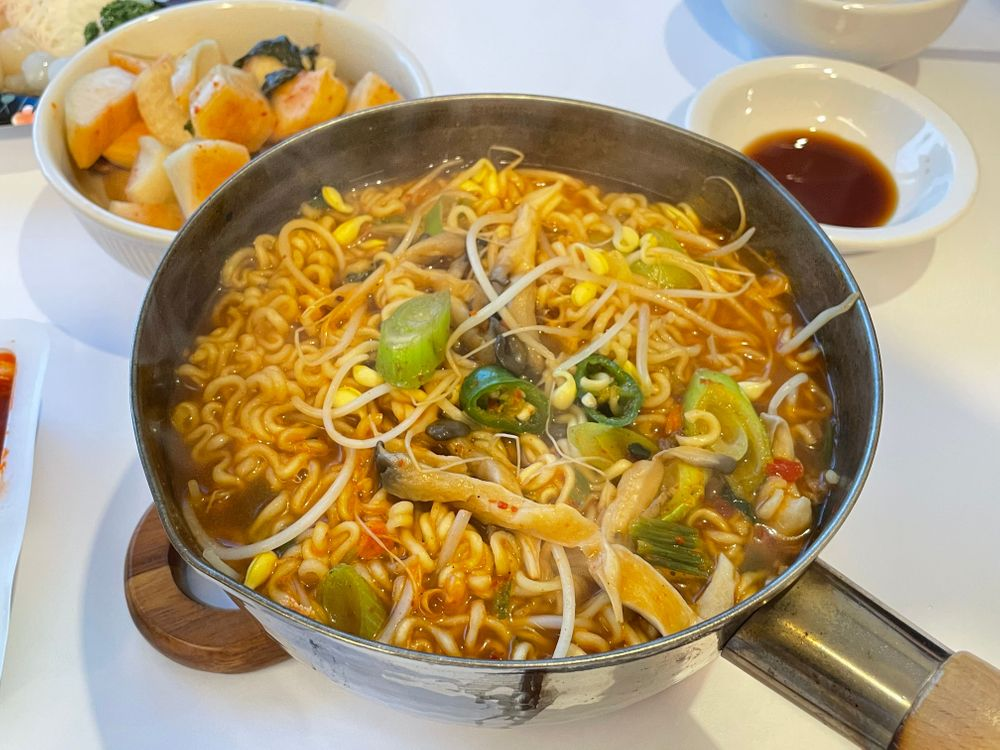

엄마 의견이 좀 들어간
콩나물 라면ㅋㅋㅋㅋㅋ

좀 비주얼이 다르죠?
팽이버섯 대신 느타리 버섯
청양고추도 쑹덩쑹덩 썰고
파도 넣었어요
완전 시원하긴 해요
제가 끓인 원래 라면 맛이랑 아주 조금 다르긴 하지만ㅎㅎ
순서도 달라요
엄마가 콩나물을 먼저 넣어야한대요
저는 사실
물 - 스프+건더기+청양고추 - 버섯 - 면+콩나물
이 순서로 넣었는데
엄마 의견으로
물 - 스프+건더기 - 콩나물 - 버섯 - 파 + 청양고추 - 면
? 이였나
이 순서로 만들었어요
재료 말고는 뭐가 그렇게 크게 다른지는 모르겠지만 🤫
회랑 맛있게 먹었답니다!